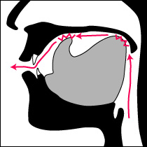
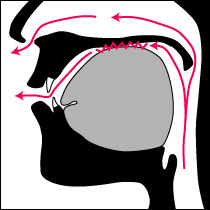
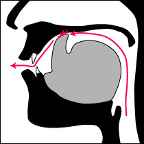

大歓喜トップ >> サンスクリット｜トップ >> 音読のための基礎文法 >> 音読ならではの注意点
音読ならではの注意点
サンスクリットは、原則として、発音する通りに綴る言語である。つまり、前後の単語との関係で発音が変わったら、同じ単語の同じ変化形でも、綴りも一緒に変わる。発音をつなげるところは、綴りも単語ごとに区切らない。だから、意味を取ろうとする人には極めて大変だが、音読しようとする人には比較的易しい言語である。書いてある通りに読めば概ね正しい。
また、そのアクセントは、英語のような、激しい強弱や遅速のあるリズミックなものではない。日本語と似て、発音の長さの単位が大体一定な上で、音の長短や上がり下がりが中心の比較的メロディックなアクセント(乃至イントネーション)が意味を持つ言語である。だから、アクセントの点では、日本語母語話者が聞き取るのに楽で、真似しやすい。
ただ、そのための規則・習慣や、例外的な部分もあるので、その中で重要な点をここで説明したい。
吟唱における発音の特徴｜アクセントについて｜音の組み合わせごとの発音のコツ
吟唱における発音の特徴
文字との関係で、読み方の顕著な例外が、吟唱においてある。
直下の3項目は、言葉の最後の子音の存在を強調する表現で、文字に書かれない。
句末・文末にある ḥ の後ろに、その直前の母音と同じ響きの短母音が続く。
例えば、
śāntiḥ śāntiḥ śāntiḥ || ⇒ śāntiḥ śāntiḥ śāntiḥi ||
ヴィサルガ(ḥ)が、文末や息継ぎの直前にあるとき、その直前の母音と同じ響きの母音を、ḥの後に、かなり明瞭に繰り返す。
つまり、次のようなことである。( ŏ,は短い o,)
-a, -ā, ＋ ḥ || ⇒ -a, -ā, ＋ ḥa ||
-i, -ī, -ai, ＋ ḥ || ⇒ -i, -ī, -ai, ＋ ḥi ||
-u, -ū, -au ＋ ḥ || ⇒ -u, -ū, -au ＋ ḥu ||
-oḥ || ⇒ -oḥŏ ||
-ṛ, -ṝ, ＋ ḥ || ⇒ -ṛ, -ṝ, ＋ ḥṛ ||
ai, や au, の全体を繰り返すのではなく、-i, -u, を付加することに注意。
このようにして付け加わる母音については、文字にする習慣がないため、そういうものだとして覚えておく必要がある。特にデーヴァナーガリ―文字では、書く方法がない。
句末・文末にある破裂音の後ろに、狭い中立母音が現れることがある。
この音をůで表すとすると、例えば、
tannaḥ sūryaḥ pracodayāt || ⇒ tannaḥ sūryaḥ pracodayātů ||
Sāyi Sūrya Gāyatrī ／「ヴェーダテキスト1」サティヤ サイ出版協会 p.100
ヴィサルガ(ḥ)以外の子音が、文末や息継ぎの直前にあるときも、その後に母音が現れることがある。
現れる母音は、日本語のウに聞こえる中立母音([ʉ])で、狭いア(a,[ə])をさらに狭くした母音である。
日本語の平均的なウよりも、唇の丸めを緩やかに、舌を前寄りにして発音する。サンスクリットで言葉として意味を持つどの母音とも、はっきり異なると良い。対照的に、u, と書かれている母音のときには、日本語の平均的なウよりも唇を丸めて突き出し、舌を奥寄りに、「オ」の響きを帯びるような深い発音([u])をすることに注意。
付加の対象となる子音は、文法的条件から、もっぱら c,を除く無声無気破裂音(＝ k, ṭ, t, p,)であって、中でも特に t, が多い。やはり文字にする習慣がないため、その箇所を覚える必要がある。
句末・文末にある亮音(特に m,)が、音節主音化して延長されることがある。
対象となりうる音は、ṅ, ṇ, n, m, l, の5つ。中でも文法的条件から、m, が延長されることが特に多い。唇を閉じたまま、ハミング(鼻歌)のように音を伸ばす。
これも、普通の綴りの上には決して現れない。ただ、アクセント記号付表記の際には、そこから判読が可能である。
アクセントについて
サンスクリットの文章の上で、普通はアクセントは表記しない。日本語や英語でも、アクセントを書かずとも意味が取れるのと同じように、サンスクリットでも意味が取れるからである。アクセントを書くのは、吟唱・詠唱を意識して、比較的古い文献を書くときだけである。発音を黒い文字で書いたところに、後から赤でアクセント記号を振ったりする。印刷ではすべて黒の例をよく見る。
文献ごとに、何段階に音の高さを区別するかなどが違うし、流儀や目的の違いもあるので、アクセント記号の使い方は一様ではない。記号一種類(例えばデーヴァナーガリ―文字の下の水平線、あるいはローマ字表記の上の鋭アクセント記号)だけで大まかな音の区別を示すだけのものから、十数種類の記号を駆使して、楽譜的な表記をするものまで、多種多様である。日本語を観察してみても、アクセント辞典では高低二段階の区別しか書いていなくとも、実際の音程の表れはもっと多段階であることに気づかれることだろう。
デーヴァナーガリ―文字で書く時の、最も一般的な記号としては、文字の下の水平線(アヌダーッタ)と、文字の上の垂直線(スヴァリタ)が挙げられる。これらは、近年のWindowsなどのコンピューターのフォントに標準で含まれていて、使用ソフトのショートカット設定などとかち合っていない限り、誰でも打つことができる。ただ、それらの使われるルールは、一様ではない。
また、サンスクリットも、古い時代ではアクセントのうちで高低アクセントが最も大切であったが、後には重要度を失うというように、その性質が歴史的にも変化してきたとされる。
従って、日本語の他の方言を真似るときのように、学びたい流派の先達のお手本を聴いて、音の高低・強弱・長短を真似ることが、どうしても必要になる。機能的に、音程の聞き取りの苦手な人、リズムを追うのが難しい人などおられるとは思うが、少なくとも、他の言語一般と比べて、特殊な注意点が求められるわけではない。
音の組み合わせごとの発音のコツ
Q. kṣ の発音がとても言いにくいんだけど……。 /k/の後に舌を反らせるなんてどうすればいいの？
A. /k/を、日本語話者がカ行を言っている平均的な位置よりも、もうちょっと奥で造ると言いやすくなります。
舌の中央を窪ませると並行して舌全体を奥上に引き上げて/k/を言い、続けて/ṣ/の摩擦をしながらそれを元に戻す感じです。
Q. jñ っていろいろに聞こえるけれど、どうなるのが正しいの？
A. 日本語話者の耳にどう聞こえるかに関わらず、以下のような一連の流れで発音するとよいでしょう。
- 1). 舌の中央部を幅広くべったりと上に付けて、空気の流れを閉鎖する。同時に、鼻に抜ける空気の流れも閉鎖する ＝準備・入り渡り
- 2). 喉(声帯)の振動を始めながら、舌の閉鎖の一部を破裂・開放する ＝/j/。しかし、下顎はまだ開かず、閉鎖していた場所はごく狭いまま。
- 3). 子音を一つ言う時間分だけ遅れて、鼻への空気の流れを開き、声を鼻に掛ける ＝/ñ/。その際に息はほとんど増やさない。
- 4). 最後に、そこから閉鎖していた部分を開いていきながら、声を鼻にかけるのをやめる。＝次の発音へ
日本語話者の耳にとって自然に聞き取れる違いが、サンスクリットにとって重要とは限りません。何でも細かく区別しなくてはならないのではなく、日本語とサンスクリットでは、音を区別する仕切りの位置や数が違うのです。日本語で区別しない違いをサンスクリットで様々に区別されて発音に苦労しますが、逆に、日本語で区別する聞こえの判別ラインがサンスクリットで重要でない場合もあるのです。「カタカナに直すとどう聞こえるのが正しいの？」という問いは、ポイントを外しがちになります。
Q. 子音の r のあとには、舌は元に戻さないといけないの？
A. いいえ、そんなことはありません。次の発音を言いやすい位置に、すぐに移ってください。
そもそも「 r, のような反舌音は特殊な構えで、それ以外がもとの平常時だ」と思っているとすれば、それは日本語母語話者の勝手な感覚です。
反舌音を楽に使えるようにする練習の一環として、舌先を反舌音の構えにした L 、つまり ɭ の状態のまま、母音のアイウエオを発音してみることをお勧めします。唇や、舌の後ろ半分、そして喉の形を変えれば、舌先の位置を動かさなくても、各母音が発音し分けられることが分かるでしょう。
ri, や rī, のような音があったとき、どうしても舌先を前歯の裏へと動かさないと母音が言えないと思われるかもしれません。しかし、実際には、必ずしも歯音の位置に舌先を移動する必要はなく、 rīḍhā,（「無礼」）のように次にすぐまた反舌音が来るのなら、舌先を反舌音に近い位置にそのまま保っておけばよいのです。
（つづく）
（最終更新2013.8.17）
大歓喜トップ >> サンスクリット｜トップ >> 音読のための基礎文法 >> 音読ならではの注意点